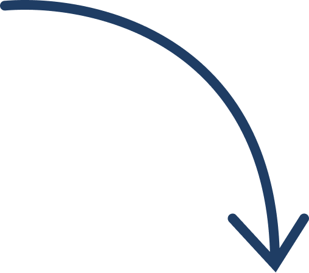

יחידה 1 רקע על תוכנית אתחלתא
שלבי הכניסה להוראה בישראל
שלב הכניסה להוראה הוא
תהליך בן שלוש שנים, שנועד לאפשר לעובדי הוראה חדשים כניסה רכה
והדרגתית אל הפרופסיה.
במהלך שלב זה מתקיימים ליווי, תמיכה, חונכות ותהליכי הערכה, במטרה
לסייע לעובד/ת ההוראה להתפתח מקצועית, להשתלב במערכת החינוכית ולבסס
דפוסי עבודה מקצועיים.
היכרות עם תהליך זה מסייעת להבין את חשיבות התוכנית, וכיצד העשייה במסגרתה משתלבת במסלול הכניסה להוראה.
לחצו על הפתקים לפירוט התהליך.
 לחצו על הפתקים לפירוט התהליך.
לחצו על הפתקים לפירוט התהליך.
לפניכם שלושה שלבים בתהליך הכניסה להוראה. כל פתק הוא כפתור שניתן להפעיל כדי לפתוח או לסגור מידע נוסף. סדר השלבים הוא שנה 1, שנה 2 ולאחר מכן שנה 3.
שנת ההוראה הראשונה, שבה חלה חובת התמחות בהוראה. במהלך שנה זו
עובדת ההוראה משתלבת בבית הספר, משתתפת בסדנת התמחות, מקבלת ליווי
של חונכת ועוברת תהליכי הערכה לקראת קבלת רישיון לעיסוק בהוראה.

לאחר שנת ההתמחות, עובדת ההוראה ממשיכה בתהליך ההשתלבות במערכת
כמורה חדשה. בשלב זה נמשך הליווי המקצועי, במטרה לחזק תחושת
מסוגלות, ביטחון והתפתחות מקצועית.
השנה השלישית ממשיכה את תהליך הכניסה להוראה בדגש על התבססות מקצועית,
חיזוק דפוסי עבודה מקצועיים, העמקת תחושת השייכות למערכת וביטחון
בתפקיד.